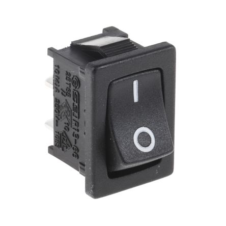
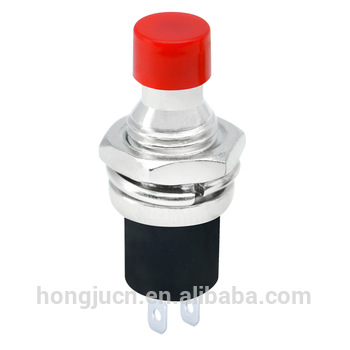
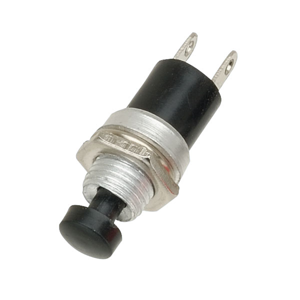
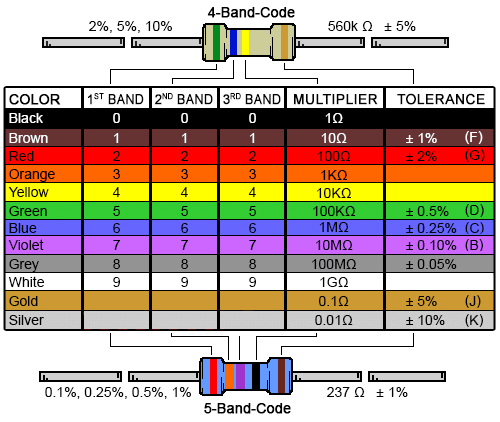
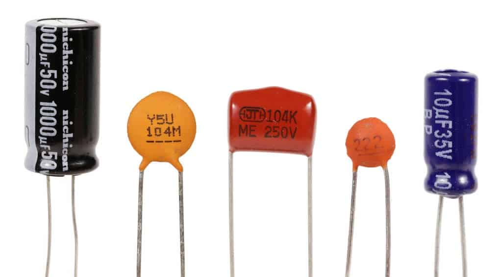
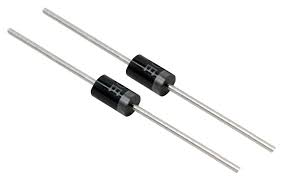
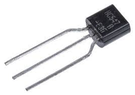
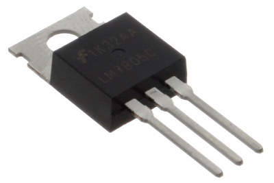
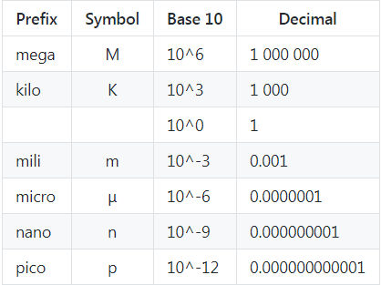

Electronics (22 June)
Electricity is the flow of electronics in a closed circuit. Voltage is the difference in electrical potential between two points, measured in Volts. Current is the rate of flow of electrical charge past a point. Current is measured in Amps. Electrical resistance (or Resistance) of an object is a measure of the opposition to the flow of electric current. Resistance is measured in Ohms. In order for current to flow, the circuit must be closed.
There are two type of electric currents:
- AC (Alternating current) where the voltage moves from positive to negative values, alternating in time.
- DC (Direct current) where the voltage potential is at a fixed value (either positive or negative).
Two Important Electrical Laws
Ohm's Law:
Ohm’s law states that Voltage = Current * Resistance, or written as
- Voltage = Current x Resistance
- Current = Voltage / Resistance
- Resistance = Voltage / Current
Calculating resistance in a circuit:
- Resistors in series, R = R1 + R2
- Resistors in parallel, R = (1/R1 + 1/R2)^-1
Kirchoff's Laws
Kirchoff’s first law (the current law):
- At any junction, or node, in an electrical circuit, the sum of the currents flowing into the node is the sum of the currents flowing out of a node.
Kirchoff’s second law (the loop/mesh law):
- When the direction is taken into account, the sum of the potential differenes in any closed circuit is zero.
Electrical Components
Electrical components are broken down into 3 types:
- Insulators - prevents current from following
- Conductors - allows current to flow
- Semiconductors - allows current to flow only if some electrical conditions are met
Common Electrical Components
- Wires: They are conductors, usually with very, very low resistance. Usually made up of copper with an insulator on the outside. They are also used for connections and creation of closed circuits. The thickness of the wire is measured using AWG (American Wire Gauge). The larger the number, the smaller the diameter.
- Switches: They are an electrical component that breaks a circuit when manually operated. Usually made up of two contacts separated by a conductor. When the conductor is closed, the circuit is completed. Common types of switches include:
- SPST - Single Pole Single Throw 
- Push-to-make 
- Push-to-break 
- Normally-closed, throw switch to break circuit
- Resistors: They are an electrical component which has made to have a fixed resistance to current. They are colour coded so that you can identify them. Besides resistance values, resistors come in different power ratings to handle the amount of current that can safely flow through. 
- Capacitors: A capacitor is a device that stores electrical energy in an electric field. It is a passive electronic component with two terminals. 
- Diodes: They are semi-conductors that allow current to flow ONLY in one direction and is used for filtering AC. 
- Transistors & MOSFETs: They are semi-conductors that allow current to flow provided an electrical condition is met on one of the pins. Can be used as amplifiers (non-saturation) or switches (saturation).
- Integrated circuits: They are deivces which are minaturized electrical circuits. Each IC can contain thousands of other electrical components configured in a particular circuit. They are essentially our modern day building blocks.
{kind=link}
{kind=link}
{kind=link}
{kind=link}
{kind=link}
{kind=link}
|  |  |
|---|---|
| Transistor | MOSFET |
{kind=link}
{kind=link}
Measurements
It is common for electrical components to have a prefix (e.g. Kilo) placed in front of the value. The following table shows the signifance of each of the terms as applied to resistance, volages, currents and other electrical values.
{kind=link}
Through the use of TinkerCAD, we are able to design, tinker and test our circuits before we implement them physically. This tool greatly enhances the learning experience in Electronics.